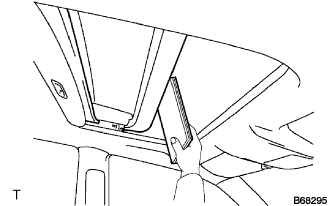
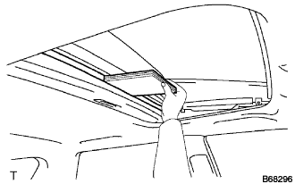

SLIDING ROOF SYSTEM > OPERATION CHECK |
| CHECK AUTO OPERATION |
Turn the engine switch on (IG).
When the roof glass is fully closed, press the OPEN switch for 0.3 seconds or more. Check that the roof glass automatically slides until it is fully opened.
When the roof glass is fully open, press the CLOSE switch for 0.3 seconds or more. Check that the roof glass automatically slides until it is fully closed.
When the roof glass is fully closed, press the UP switch for 0.3 seconds or more. Check that the roof glass automatically tilts until it is fully tilted up.
When the roof glass is fully up, press the DOWN switch for 0.3 seconds or more. Check that the roof glass automatically tilts until it is fully tilted down.
When the auto operation is operating, check that pressing any sliding roof switch stops the roof glass operation.
| CHECK SLIDING ROOF OPERATION AFTER ENGINE SWITCH IS TURNED OFF |
Turn the engine switch from on (IG) to off, and check that the sliding roof operates. Then open the driver side door once, and check that the sliding roof does not operate.
Turn the engine switch from on (IG) to off and wait for approximately 45 seconds. Check that the sliding roof does not operate.
Operate the auto (slide open/close or tilt up/down) operation. While the roof glass is in motion, turn the engine switch from on (IG) to off. Check that the auto operation continues until the roof glass opens or closes fully.
| CHECK JAM PROTECTION FUNCTION |
 |
When the sliding roof auto close operation is operating and an object is caught between the vehicle body and glass, check that the roof glass opens a distance of 218 mm (8.58 in.) from the point of contact with the object, or opens fully if an opening distance of 218 mm (8.58 in.) is not available.
 |
When the auto tilt down function is operating, and an object is caught between the vehicle body and the roof glass, check that the sliding roof tilts up fully.
| CHECK TRANSMITTER-LINKED OPEN/CLOSE OPERATION FUNCTION (w/ Remote Function) |
Close all the doors.
Hold down the transmitter unlock switch for approximately 3 seconds or more and check that the slide open/tilt up operation occurs. Also, when the unlock switch is released, check that the roof glass stops moving.
Hold down the transmitter lock switch for approximately 3 seconds or more and check that the slide close/tilt down operation occurs. Also, when the lock switch is released, check that the roof glass stops moving.
| CHECK KEY-LINKED OPEN/CLOSE OPERATION FUNCTION (DRIVER DOOR ONLY) (w/ Remote Function) |
Insert the key into the driver side door key lock cylinder, and turn the key to the unlock position for approximately 3 seconds or more. Check that the sliding roof starts moving (slide open/tilt up operation). Then release the key and check that the sliding roof stops moving.
Insert the key into the driver side door key lock cylinder, and turn the key to the lock position for approximately 3 seconds or more. Check that the sliding roof starts moving (slide close/tilt down operation). Then release the key and check that the sliding roof stops moving.
| CHECK ENTRY LOCK SWITCH-LINKED CLOSE OPERATION FUNCTION (w/ Remote Function) |
Close all the doors, open the roof glass and check that the key is not in the vehicle.
When the entry lock switch on the door outside handle is pressed for 3 seconds or more, check that the roof glass closes. Also, when the entry lock switch is released, check that the roof glass stops operating.